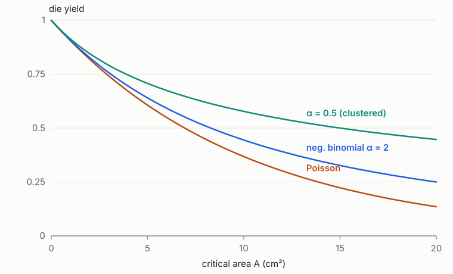
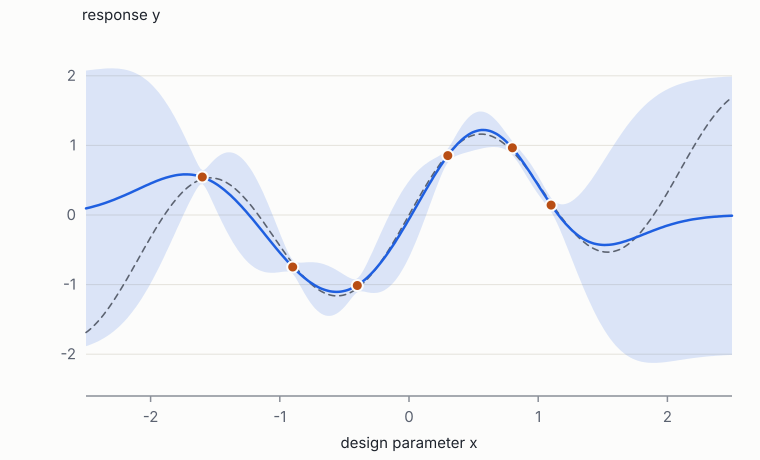

Foundations of Quantum Engineering · Book 7 of 7
Making Quantum Chips: Fabrication, Simulation, Yield and Design Automation
Cleanroom processes, classical EDA, electromagnetic simulation, variability and yield, cryogenic packaging and test, and statistical learning for manufacturing
How to use this book
The first six books explained what a quantum processor is and why it behaves as it does. This one explains how it is made, how classical chips are designed so that they can be made reliably, and what it would take to do the same for quantum chips. It is the bridge into the review From Laboratory to Foundry, and it is written so that every section of the review has a chapter here that prepares for it.
Chapter 1 follows a wafer through a cleanroom. Chapter 2 describes classical electronic design automation (EDA), the industry the review proposes to extend. Chapter 3 opens the black box of electromagnetic solvers. Chapter 4 develops variability and yield, the central technical theme of the review. Chapter 5 covers packaging, cryogenics and test. Chapter 6 assembles the statistical and machine-learning toolkit that the review's open problems call for. Chapter 7 is a map: for each section of the review it lists what to re-read, and it proposes projects that turn the review's open problems into exercises at the scale of a thesis chapter.
Prerequisites: Book 1 Chapters 7–8 (probability, numerics), Book 2 Chapters 4–6 and 8, and Book 6. Useful references: Plummer, Deal and Griffin for fabrication [1], Lavagno et al. for EDA [2], Jin for finite elements [3], and Gelman et al. for Bayesian statistics [4].
1 How quantum chips are made
Goals
- Know the unit processes of microfabrication: deposition, lithography, etching, lift-off and metrology.
- Follow a superconducting-qubit process flow from bare wafer to diced chip, including junctions, airbridges and 3D integration.
- Understand the difference between a research cleanroom and a production line, and what statistical process control means.
1.1 Unit processes
Microfabrication builds a device by repeating a few steps on a wafer (silicon or sapphire, 100–300 mm across) [1]:
- Deposition adds a film. Evaporation heats a source in vacuum so atoms travel in straight lines to the wafer (directional, good for lift-off and shadow evaporation of junctions). Sputtering knocks atoms off a target with an ion plasma (denser films, conformal coverage, standard for Nb, Ta, TiN). Atomic layer deposition grows films one atomic layer at a time (precise oxides and nitrides). Oxidation grows an oxide on the existing surface, as in the junction barrier.
- Lithography defines patterns. A light-sensitive resist is spun on, exposed through a mask (optical lithography) or written point by point with an electron beam (e-beam lithography), and developed. Optical resolution follows \(R = k_1\lambda/\mathrm{NA}\) [5]: about 250 nm for i-line steppers (365 nm), below 100 nm for deep-UV scanners at 193 nm. E-beam lithography reaches 10 nm but writes slowly, so research labs use it for junctions while production lines prefer optical steppers.
- Etching removes material where the resist does not protect it: wet etching in liquid chemicals (isotropic, undercuts) or dry etching in a plasma (reactive-ion etching, anisotropic, vertical sidewalls). Etching the substrate between metal lines ("trenching") reduces the substrate–air participation of Book 6 §6.1.
- Lift-off deposits metal over a patterned resist and dissolves the resist, removing the metal on top of it. It avoids etching the film but leaves edges sensitive to resist profile.
- Metrology measures what was made: film thickness (ellipsometry, profilometry), linewidths (scanning electron microscopy), sheet resistance (four-point probes), surface chemistry (XPS), and electrical test structures.
1.2 A superconducting-qubit process flow
- Substrate preparation: high-resistivity silicon or sapphire, cleaned and often stripped of native oxide (hydrofluoric acid dip) immediately before deposition, because the metal–substrate interface is lossy (Book 6 §6.1).
- Base layer: sputter 100–200 nm of Nb, Ta or Al; pattern ground planes, capacitor pads, resonators, feedlines and control lines by optical lithography and dry etch. Flux-trapping holes are etched into ground planes.
- Junctions: e-beam or optical lithography of a bilayer resist with an undercut, double-angle aluminium evaporation with an oxidation step in between (Book 6 §2.5), lift-off. An ion-milling step removes native oxide where junction leads must contact the base layer.
- Airbridges: resist arches and a metal layer that crosses CPW lines to tie ground planes together and suppress slotline modes.
- Room-temperature test: probe junction resistances (and resistance test structures) across the wafer; optionally laser-anneal junctions to trim \(R_n\) (Lab to Foundry §4.4).
- Dicing and packaging: protect, dice, clean, and mount chips; wirebond or flip-chip bond to a carrier (Chapter 5).
Larger processors add 3D integration: a qubit chip flip-chip bonded with indium bumps to a separate wiring chip carrying readout resonators and control lines, and through-silicon vias that connect top and bottom surfaces and suppress substrate modes. Each adds process steps, new interfaces and new sources of variation (bump height sets the inter-chip gap and hence capacitances).
1.3 Research cleanroom versus production line
A university cleanroom optimises flexibility: tools are shared, recipes change weekly, wafers are processed one at a time, and the record of what was done is a lab notebook. A production line optimises reproducibility: every tool is qualified, every recipe frozen, every wafer tracked through a manufacturing execution system, and every critical parameter measured and plotted on control charts. Statistical process control (SPC) tracks each parameter's mean and spread over time and flags drifts before they ruin product. The capability of a process to meet a specification \([L, U]\) is summarised by
with \(C_{pk}\ge1.33\) a typical industrial requirement (the nearest specification limit is four standard deviations from the mean). Between 2024 and 2026, superconducting, ion-trap, photonic and spin-qubit programmes moved onto 200 and 300 mm production lines and foundries opened to outside customers (Lab to Foundry §2.2). That move makes SPC data available at scale, and it is the precondition for the statistical design methods of Chapters 4 and 6.
Each process step is a source of variation with a spatial structure: film thickness varies smoothly across a wafer, linewidths vary with local pattern density, and oxidation varies from run to run. A design tool that predicts yield needs a model of this structure, built from metrology and test data. The review's "die record" (Lab to Foundry §11.1) is the data structure that links each chip's process history to its measured performance.
Exercises
- An i-line stepper has NA = 0.57 and \(k_1 = 0.5\). What is its resolution? Can it pattern a 150 nm wide junction lead?
Solution
\(R = 0.5\times365/0.57\approx320\) nm. A 150 nm lead is below the resolution; it needs DUV (193 nm, NA 0.93: about 100 nm at \(k_1 = 0.5\)) or e-beam lithography, or a junction design (overlap junctions) that relaxes the requirement.
- Junction resistance has a specification of \(10.0\pm0.3\) kΩ. The process gives \(\mu = 10.1\) kΩ and \(\sigma = 0.08\) kΩ. Compute \(C_{pk}\) and the expected fraction out of specification.
Solution
\((10.3 - 10.1)/0.24 = 0.83\) and \((10.1 - 9.7)/0.24 = 1.67\): \(C_{pk} = 0.83\). Upper tail \(1-\Phi(2.5) = 0.62\%\), lower tail \(1-\Phi(5)\approx3\times10^{-7}\): about 0.6% out of specification. Centring the mean would give \(C_{pk} = 1.25\) and 0.02% out.
2 Classical electronic design automation in one chapter
Goals
- Know the classical chip design flow from specification to tape-out, and the role of each tool.
- Understand process design kits, parametrised cells, design-rule checking, layout-versus-schematic and parasitic extraction.
- Understand compact models, corners and Monte Carlo sign-off.
- See which pieces carry over to quantum design and which do not.
2.1 The flow
A modern digital or analogue chip is designed by a team that never enters a fab. That separation, the fabless model, works because of a contract between designer and foundry, written in software [2, 6]:
- Specification and architecture: what the chip must do, at what power and speed.
- Design entry: schematics (analogue) or hardware description languages compiled by logic synthesis into standard cells (digital).
- Simulation with compact device models (SPICE for analogue, timing and power models for digital).
- Physical design: floorplanning, placement and routing of millions of cells, solved with graph partitioning, analytical placement and maze routing [7].
- Physical verification: design-rule checking (DRC: does the layout obey the foundry's geometric rules?) and layout-versus-schematic (LVS: is the drawn circuit the intended one?).
- Parasitic extraction: compute the resistances, capacitances and inductances of the drawn wires, and re-simulate with them.
- Sign-off: timing, power, noise, reliability and yield checks across process corners and statistical variation, then tape-out of the layout (GDSII or OASIS file) to the foundry.
2.2 The process design kit
The PDK is the foundry's half of the contract. It contains: the layer stack and its material properties; design rules (minimum widths, spacings, enclosures, densities); compact models of every device the process offers, fitted to measured silicon and including statistical variation; parametrised cells (p-cells) that generate correct layouts for devices from a few parameters; extraction rule decks; and verification decks for DRC and LVS. A design that passes the PDK's checks and simulates correctly with its models will, with high probability, work when fabricated. That probability is what the industry sells.
Quantum chips have no equivalent yet: no compact models of qubits fitted to process data, no rule decks that encode coherence-relevant rules (keep junctions away from certain interfaces, keep the field at metal edges below a participation target), and no statistical models of junction variation shipped with the process. The review's §10 maps exactly which pieces exist (Lab to Foundry §10.4).
2.3 Compact models, corners and Monte Carlo
A compact model is a set of equations with fitted parameters that predicts a device's terminal behaviour quickly enough to simulate millions of devices. SPICE transistor models (BSIM and successors) have hundreds of parameters, each extracted from measurements of test structures [8]. Variation is represented in two ways. Corners are worst-case combinations (fast-fast, slow-slow, and so on) of global process shifts; a design must work at all of them. Monte Carlo analysis samples the statistical model of global and local (mismatch) variation and simulates many instances. Local mismatch follows Pelgrom's law [9]:
the standard deviation of the difference of a parameter \(P\) between two nominally identical devices falls with the square root of their area, because random microscopic fluctuations average over the area. Exactly this law applies to Josephson junctions: larger junctions are more reproducible, at the cost of more capacitance and less flexibility. Analogue designers routinely size devices by Pelgrom's law to meet matching specifications.
2.4 What transfers to quantum design
| Classical | Quantum counterpart | Status |
|---|---|---|
| Layout editors, p-cells, GDS | Parametrised qubit, resonator, coupler cells | Exists (Quantum Metal, KQCircuits, gdsfactory) |
| DRC / LVS | Geometric rules plus coherence-aware rules; Hamiltonian-versus-schematic | Geometric DRC exists; physics-aware checks missing |
| Parasitic extraction | Capacitance, EM eigenmodes, energy participation | Exists, but slow and without error bounds |
| SPICE compact models | Hamiltonian-level models of qubits fitted to process data | Largely missing |
| Corners and Monte Carlo | Frequency-collision and coherence yield analysis | Research scripts |
| Timing sign-off | Error-budget and logical-error sign-off | Missing |
The biggest conceptual difference is the target. Classical sign-off asks whether each signal meets timing with margin; quantum sign-off must ask whether a Hamiltonian lands inside windows of order \(10^{-3}\) relative, and whether the whole processor's error model gives the required logical error rate. The second is a probability statement over a high-dimensional distribution, which is why the review frames quantum EDA as a statistics problem as much as a simulation problem.
Read the review's §10 alongside this chapter: it surveys incumbent vendors (Synopsys/Ansys, Cadence, Keysight), fabrication and test equipment makers, and quantum-native tools, and places each on the gap map. Knowing the classical flow lets you judge which gaps are engineering (porting an existing method) and which are research (no method exists).
Exercises
- Junction critical currents follow Pelgrom's law with \(A_P = 2\%\cdot\mu\mathrm m\) (relative mismatch times root area). What is the expected relative mismatch for junctions of \(0.02\) µm² and of \(0.2\) µm²?
Solution
\(\sigma = 2\%/\sqrt{0.02} = 14\%\) and \(2\%/\sqrt{0.2} = 4.5\%\). (Real processes do better through careful control, but the scaling with area holds; this is one reason fluxonium's large array junctions are reproducible while its small junction is not.)
- List three rules you would add to a DRC deck for a superconducting qubit process that a classical deck would not contain.
Solution
Examples: minimum distance from junction to any lossy dielectric (such as a crossover's oxide); maximum interface participation for capacitor geometries (a physics check, not a pure geometry check); airbridge spacing along CPW lines to suppress slotline modes; maximum ground-plane area without flux-trapping holes; keep-out zones around qubits for unrelated lines (crosstalk); symmetry rules for SQUID loops (flux-noise and asymmetry).
3 Electromagnetic simulation: from layout to Hamiltonian
Goals
- Understand the finite-element method for electrostatics and for Maxwell eigenproblems, and why edge elements are used.
- Know the method of moments and the finite-difference time-domain method, and when each is used.
- Set up eigenmode and driven simulations of a qubit chip, with ports, boundaries and mesh refinement, and judge convergence.
- Follow the energy-participation and black-box workflows, and understand model-order reduction and passivity.
3.1 Finite elements
The finite-element method (FEM, Book 1 §8.3) solves a PDE in weak form on a mesh of tetrahedra [3]. For electrostatics, find \(\phi\) such that \(\int\varepsilon\nabla\phi\cdot\nabla v\,\dd V = 0\) for every test function \(v\), with \(\phi\) fixed on conductors. Expanding \(\phi\) in piecewise-polynomial "hat" functions gives a sparse symmetric positive-definite system, solved by preconditioned conjugate gradients; each capacitance-matrix column costs one solve (Book 2 §4.4). For Maxwell's equations the unknown is a vector field, and naive node-based vector elements produce spurious non-physical modes. Edge (Nédélec) elements, whose unknowns are tangential field components along mesh edges, enforce the right continuity and eliminate them. The curl-curl eigenproblem (Book 2 eq. (24)) becomes a generalised sparse eigenproblem \(K\mathbf e = \omega^2M\mathbf e\), solved by shift-invert Arnoldi near the frequencies of interest (Book 1 §8.2). Commercial solvers (Ansys HFSS, COMSOL) and open ones (AWS Palace, ElmerFEM) all work this way.
3.2 Other methods
- Method of moments (MoM) [10]: discretise only conductor surfaces and solve an integral equation using the Green's function of the layered substrate. Ideal for planar circuits on uniform stacks (Sonnet, Keysight Momentum, Ansys Q3D for capacitance); the matrices are dense but much smaller than 3D FEM, and fast multipole or hierarchical-matrix methods compress them.
- Finite-difference time-domain (FDTD): discretise space on a grid and step Maxwell's equations in time. Natural for broadband optics and photonics (one simulation gives the whole spectrum after a Fourier transform), less so for high-\(Q\) microwave resonators, which ring for millions of periods.
- Mode solvers: 2D eigenproblems for the cross-section of a waveguide, giving \(n_{\mathrm{eff}}\), \(Z_0\) and field profiles; the input to circuit-level models of CPWs and optical waveguides.
3.3 Setting up a qubit simulation
An eigenmode simulation of a transmon with its readout resonator has these ingredients:
- Geometry: metal as zero-thickness perfect conductors (or with kinetic inductance as a surface impedance), substrate and vacuum box, package walls.
- Junction: a lumped inductor boundary \(L_J\) on a small rectangle where the junction sits (the linearised junction, Book 6 eq. (7)).
- Ports and losses: the readout line terminated in 50 Ω lumped ports or absorbing boundaries, so the modes acquire finite \(Q\) and the Purcell rate can be read off; dielectric loss tangents assigned to regions if loss is to be estimated.
- Mesh: adaptive refinement driven by an error estimator, with forced refinement at metal edges and near the junction, because the field singularity at edges (Book 2 §4.2) controls both convergence and surface participation.
- Convergence: refine until mode frequencies change by less than a tolerance between passes, then check the quantities you actually need (participation ratios converge much more slowly than frequencies). Extrapolate in mesh size where possible (Book 1 §8.3).
The outputs are mode frequencies \(\omega_m\), quality factors, and field distributions. To turn them into a Hamiltonian, compute for each mode the energy-participation ratio \(p_m\) of the junction (the fraction of the mode's inductive energy stored in \(L_J\)), and use Lab to Foundry eq. (10): the anharmonicity of mode \(m\) is about \(p_m^2\hbar\omega_m^2/8E_J\) and the cross-Kerr between modes \(m,n\) about \(p_mp_n\hbar\omega_m\omega_n/4E_J\) [11]. For a transmon mode, \(p\approx1\); for the readout mode, \(p\) is small and sets \(\chi\).
The alternative black-box approach runs a driven simulation with a port at the junction, computes the admittance \(Y(\omega)\) seen by the junction, and finds modes as zeros of \(Y\) with effective impedances from its slope [12, 13]. It naturally includes loss and is the bridge to model-order reduction.
3.4 Model-order reduction and passivity
A field simulation has millions of unknowns; a circuit model needs tens. Model-order reduction compresses one into the other. Vector fitting [14] fits a sampled response with a rational function \(Y(s)\approx\sum_k\frac{r_k}{s - p_k} + d + es\), whose poles \(p_k\) are the modes. Krylov projection methods such as PRIMA [15] project the large system onto a small subspace while preserving passivity: the reduced model cannot generate energy. A non-passive reduced model can predict negative loss or spurious gain, and in a quantum context it can predict wrong mode frequencies and wrong decay rates. Hierarchical extraction, where each repeated cell is reduced once and the cells are coupled through their interfaces (Lab to Foundry eq. (11)), is how classical EDA scales to whole chips, and the review argues the same is needed for quantum processors (Lab to Foundry §3.5).
Problem 2 of the review asks for extraction with certified error bounds at processor scale. This chapter supplies the ingredients: FEM with adaptive refinement for accuracy, reduction with passivity for speed, and hierarchical composition for scale. The open question is how to carry a posteriori error estimates through all three to the uncertainty of each Hamiltonian parameter.
Exercises
- A mesh refinement study gives mode frequencies 5.212, 5.183 and 5.176 GHz at mesh sizes \(h\), \(h/2\), \(h/4\). Estimate the convergence order and the extrapolated frequency.
Solution
Differences 29 and 7 MHz, ratio about 4.1, so order \(p\approx\log_2 4.1\approx2\). Richardson: \(f\approx5.176 - 7/(4-1)\approx5.174\) GHz. The finest mesh is still about 2 MHz off.
- Using EPR, a transmon mode at 5.0 GHz has \(p = 0.98\) and \(E_J/h = 14\) GHz. Estimate its anharmonicity.
Solution
\(\alpha/2\pi\approx p^2f^2/(8E_J/h) = 0.96\times25/112\approx0.21\) GHz, i.e. \(\alpha/2\pi\approx-214\) MHz (negative sign from the cosine expansion).
- Why does a non-passive reduced model of a resonator's admittance predict wrong \(T_1\) values?
Solution
\(T_1\) is computed from \(\Re Y(\omega_q)\) (Book 3 §6.5). A passive admittance has \(\Re Y\ge0\) at all frequencies; a non-passive fit can have small negative or wrongly small \(\Re Y\) near the qubit frequency, predicting gain or an unphysically long \(T_1\).
4 Variability and yield
Goals
- Classify sources of variation (global, spatially correlated, local random) and model them.
- Use defect-limited yield models (Poisson, negative binomial) and parametric yield.
- Build and analyse a frequency-collision yield model for a qubit lattice.
- Understand sensitivity-based statistical design, chance constraints and post-fabrication trimming.
4.1 Sources and structure of variation
A manufactured parameter \(x\) (a junction resistance, a film thickness, a linewidth) can be decomposed as
a target, lot-to-lot and wafer-to-wafer offsets, a smooth spatial pattern across the wafer \(g_w(\mathbf r)\) (from deposition and oxidation non-uniformity, typically radial), and a local random part \(\epsilon\) that is uncorrelated between devices beyond some short correlation length (Pelgrom mismatch, (2)). The decomposition matters because the parts behave differently. Global offsets move every qubit together and are cheap to correct by recentring the process. Smooth gradients are partly predictable from neighbouring test structures. Local randomness is irreducible except by design (larger devices) or by post-fabrication trimming. A nested variance model estimates each component's size from wafer test data, which is the starting point of the hierarchical models of Chapter 6.
4.2 Defect-limited yield
Random defects (particles, resist residues, shorts, opens) kill a die if one lands in a critical area \(A\). If defects are scattered independently with density \(D_0\), the number in the critical area is Poisson and the yield is
Real defects cluster, which the negative binomial model captures with a clustering parameter \(\alpha\) (small \(\alpha\) means strong clustering, and \(\alpha\to\infty\) recovers Poisson) [16]. Clustering helps large dies: if defects bunch together, more dies escape them entirely (Figure 1). For quantum chips the "critical area" includes not only shorts and opens but anything that ruins a qubit: a junction that failed to form, a TLS strongly coupled to a qubit, a trapped vortex near a SQUID. Error correction can tolerate a few dead qubits by routing around them, at a cost in effective code distance (Lab to Foundry §9.4), which turns a binary yield into a graded one.

4.3 Parametric yield
Even without defects, a die fails if its parameters land outside specification. For a parameter vector \(\boldsymbol\theta\) (frequencies, couplings, anharmonicities) produced from process variables \(\mathbf x\) by the design map \(\boldsymbol\theta = f(\mathbf x)\), the parametric yield is
where \(\mathcal A\) is the acceptable region. Linearising \(f\) around the nominal design with its Jacobian \(\mathbf J\), the parameter covariance is \(\mathbf J\Sigma_x\mathbf J^{\mathsf T}\) (Book 1 eq. (36)), and when \(\mathcal A\) is a box or a polytope the yield is a multivariate Gaussian probability, computed by Monte Carlo or by bounding methods. Design centring moves the nominal point to maximise \(Y\); design for robustness reduces \(\|\mathbf J\|\), the sensitivity, where the physics allows.
4.4 Frequency collisions: a worked model
Consider a square lattice of fixed-frequency transmons coupled for cross-resonance gates, with neighbouring qubits designed to differ by \(\mu\) and each frequency independently Gaussian with standard deviation \(\sigma\) around its target. For each coupled pair, the detuning \(\Delta = f_i - f_j\) is Gaussian with mean \(\mu\) and variance \(2\sigma^2\). A pair fails if \(\Delta\) lands in any forbidden window \((c_k - w_k, c_k + w_k)\): near zero (degeneracy), near \(\pm\alpha/2\) (two-photon transitions) and outside the straddling regime (gates too slow) [17, 18]. The per-pair failure probability is
and, neglecting correlations between edges that share a qubit (and spectator conditions involving three qubits), the probability that a chip with \(E\) couplings has no collision is \(Y\approx(1-p_{\mathrm{edge}})^E\). This is the model behind the review's Lab to Foundry Figure 3. Its lessons are stark: because \(E\) grows with qubit count, holding yield fixed requires \(p_{\mathrm{edge}}\propto1/E\), and because \(p_{\mathrm{edge}}\) depends on \(\sigma\) through Gaussian tails, yield collapses over a narrow range of \(\sigma\). At \(\sigma\approx\) 50 MHz (about a 2% junction spread), essentially no large lattice is collision-free; at \(\sigma\approx\) 10–15 MHz, hundred-qubit lattices become feasible. Correlated edges and spectator conditions make the true yield lower; Monte Carlo over the whole lattice gives the exact number for a given model.
4.5 Designing for yield
- Frequency allocation: choose the target pattern (how many distinct frequencies, which detunings) to maximise yield, not to hit a nominal optimum. With uncertainty this is a chance-constrained optimisation, \(\max\ Y(\boldsymbol\theta_0)\) or \(\min\ \text{cost}\) subject to \(\Pr[\text{constraints met}]\ge1-\epsilon\) [19, 20].
- Tunability: flux-tunable qubits or couplers absorb fabrication error at the cost of noise and wiring.
- Trimming: measure each junction warm, then laser-anneal it towards target. Trimming reduces \(\sigma\) from about 2% to below 0.5% in demonstrated processes [21], but it costs test time and depends on predicting cold frequencies from warm resistance, which is itself statistical (Lab to Foundry §4.4).
- Architecture: tunable couplers widen collision windows; codes and compilers that can skip bad edges convert a hard yield into a graded one.
This chapter is a compressed version of the review's §4 (Lab to Foundry §4). The open problems there (statistical sign-off with calibrated uncertainty, chance-constrained allocation with correlated variation, warm-to-cold prediction) all start from the models here, with data from real production lines.
Exercises
- A 1 cm² die with \(D_0 = 0.1\) cm\(^{-2}\): compute Poisson yield and negative-binomial yield with \(\alpha = 0.5\). Repeat for 4 cm².
Solution
1 cm²: Poisson \(\ee^{-0.1} = 0.905\); NB \((1 + 0.2)^{-0.5} = 0.913\). 4 cm²: Poisson \(\ee^{-0.4} = 0.670\); NB \((1+0.8)^{-0.5} = 0.745\).
- With a single forbidden window at \(\Delta\in(-17, 17)\) MHz, \(\mu = 100\) MHz and \(\sigma = 30\) MHz, compute \(p_{\mathrm{edge}}\) and the yield of a lattice with 200 edges (ignore other windows).
Solution
\(\sqrt2\sigma = 42.4\). \(\Phi((17-100)/42.4) - \Phi((-17-100)/42.4) = \Phi(-1.96) - \Phi(-2.76) = 0.0250 - 0.0029 = 0.0221\). \(Y = (1-0.0221)^{200}\approx\ee^{-4.47}\approx1.1\%\).
- In the previous exercise, what \(\sigma\) gives 90% yield?
Solution
Need \(p_{\mathrm{edge}}\approx\ln(1/0.9)/200 = 5.3\times10^{-4}\). Dominated by the upper edge of the window: \(\Phi((17-100)/\sqrt2\sigma)\approx5.3\times10^{-4}\) gives \(83/(\sqrt2\sigma)\approx3.27\), \(\sigma\approx18\) MHz. A factor 1.7 in \(\sigma\) changes yield from 1% to 90%.
5 Packaging, cryogenics and test
Goals
- Understand what a quantum-chip package must do and the electromagnetic problems it creates.
- Budget heat and noise for the wiring of a cryogenic system.
- Know the test flow from wafer probing at room temperature to cryogenic characterisation, and why cold test is the bottleneck.
5.1 The package
A package holds the chip, connects it to the outside world, thermalises it to the mixing chamber, and shields it. For superconducting chips it is usually a machined copper or aluminium enclosure with a printed circuit board fanning out signal lines to coaxial connectors, and wirebonds or spring pins from board to chip [22]. Its electromagnetic requirements are demanding:
- No modes near qubit frequencies. The cavity formed by the enclosure (and by the chip's substrate itself) has modes at frequencies scaling inversely with size (Book 2 §5.2, Lab to Foundry eq. (25)). Large dies push the lowest mode into the qubit band, so packages use pillars, through-chip vias or segmented enclosures to raise it (Lab to Foundry §6.1).
- Continuous ground. Ground planes on chip and board must be tied together densely (many wirebonds, bump bonds or vias) or they support slot modes and become antennas.
- Low crosstalk between control lines in the board, connectors and bonds.
- Shielding against magnetic fields (mu-metal and superconducting shields), infrared radiation (blackbody-tight enclosures, absorptive coatings), and, increasingly, ionising radiation.
Flip-chip and multi-chip modules move wiring off the qubit chip; superconducting through-silicon vias and bump bonds carry signals vertically. Each interface must be designed and simulated as part of the microwave circuit, not added afterwards.
5.2 Heat and noise budgets
Every line from room temperature conducts heat and carries thermal noise (Book 2 §8.5). Passive heat load per line depends on cable material (stainless steel and superconducting NbTi conduct little heat; copper conducts a lot but has low loss) and on thermal anchoring at each stage. Active load comes from signal power dissipated in attenuators and from DC currents in flux lines. Summing over lines and stages gives the review's constraint (Lab to Foundry eq. (26)): total load at each stage must stay below its cooling power. With roughly two to three coaxial lines per qubit today, a large dilution refrigerator supports on the order of a thousand qubits; beyond that, multiplexing, cryo-CMOS, flex cables and optical links are needed (Lab to Foundry §6.2). This is a system-design problem whose variables include chip layout (which lines are needed), packaging (how lines get to the chip) and control architecture.
5.3 Test
Test happens at several stages, each cheaper and less informative than the next:
- Room-temperature wafer probing: junction resistances, line continuity, leakage. Seconds per die, fully automated, done on every die. Predicts \(E_J\) through Ambegaokar–Baratoff, with a warm-to-cold uncertainty.
- Cryogenic probing at 4 K or below: emerging cryogenic wafer probers measure resonator frequencies, critical currents and some loss at a few kelvin, for many dies per cooldown.
- Millikelvin characterisation: spectroscopy, \(T_1\), \(T_2\), gate calibration and benchmarking in a dilution refrigerator. Each cooldown takes one to several days and holds a handful of chips; full characterisation of a large processor takes days to weeks (Book 4 §8.4).
Cold test is the scarce resource (Lab to Foundry §7.2): it is where the quantities that matter are measured, and it is too slow to apply to every chip. That makes two things valuable. Prediction: models that infer cold behaviour from warm data and design data, with calibrated uncertainty, so that only promising chips are cooled. And experimental design: choosing which measurements to make on a cooled chip to learn the most per hour of fridge time (Lab to Foundry eq. (30)). Chapter 6 introduces the statistics for both.
The review's §6–§7 cover this chapter's topics in depth. Packaging is the place where chip design meets mechanical and thermal design, so a quantum design flow must extend beyond the die boundary; test is where predictions meet data, so the flow must ingest measurements as well as produce layouts.
Exercises
- A silicon chip of 12 × 12 mm in a tightly fitting box (\(\varepsilon_r = 11.45\)) has its first box mode at roughly \(f\approx\frac{c}{2\sqrt{\varepsilon_r}}\sqrt{2}/a\). Estimate it.
Solution
\(c/(2\sqrt{11.45}) = 4.43\times10^7\) m/s; \(\times\sqrt2/0.012 = 5.2\) GHz, inside the qubit band. A 12 mm die needs mode suppression.
- A refrigerator offers 20 µW at the mixing chamber. Each drive line dissipates 0.5 nW in its mixing-chamber attenuator during operation and conducts 2 nW of passive heat. How many lines can it support at that stage?
Solution
2.5 nW per line, so 8,000 lines in principle; other stages (the still, the 4 K plate where HEMTs dissipate milliwatts) and flux-line DC currents usually bind first, and real budgets keep large margins.
- Warm probing of a wafer predicts frequencies with 60 MHz uncertainty; a chip is useful if all 20 qubits are within ±100 MHz of target after cooldown. How might you decide which chips to cool?
Solution
For each chip, compute the predicted probability that all 20 cold frequencies fall in the window, using the warm predictions and their uncertainty (including correlations from the wafer-level model). Cool chips in order of that probability, and update the warm-to-cold model with each measured chip. This is the decision problem the review's hierarchical model (Lab to Foundry eq. (20)) is meant to serve.
6 Statistical learning for design and manufacturing
Goals
- Build surrogate models with Gaussian-process regression and know their uncertainty.
- Use Bayesian optimisation for expensive design problems.
- Build hierarchical (multilevel) models for wafer and fab data, such as warm-to-cold prediction.
- Know how to check that uncertainty estimates are calibrated (conformal prediction), and how to choose experiments (Bayesian experimental design).
- Know where machine learning helps in quantum EDA and where it must not be trusted.
6.1 Gaussian-process surrogates
An electromagnetic simulation of one qubit cell takes minutes to hours; an optimiser may need thousands of evaluations. A surrogate is a cheap model of the expensive map \(\mathbf x\mapsto y\) (geometry to frequency, say), fitted to a few simulations. A Gaussian process (GP) is a prior over functions such that any finite set of values is jointly Gaussian, with covariance given by a kernel \(k(\mathbf x,\mathbf x')\), commonly the squared exponential \(\sigma_f^2\exp(-\|\mathbf x - \mathbf x'\|^2/2\ell^2)\) [23]. Given noisy observations \(\mathbf y\) at inputs \(X\), the posterior at a new input \(\mathbf x_*\) is Gaussian with
where \(K_{ij} = k(\mathbf x_i,\mathbf x_j)\) and \((\mathbf k_*)_i = k(\mathbf x_i,\mathbf x_*)\). The posterior mean interpolates the data; the posterior variance is small near data and grows away from it (Figure 2). Kernel hyperparameters (\(\ell\), \(\sigma_f\), \(\sigma_n\)) are fitted by maximising the marginal likelihood. GPs are excellent for smooth maps in up to tens of dimensions with hundreds to thousands of points; beyond that, neural-network surrogates and operator-learning models (which map whole fields or geometries to fields) take over [24, 25].

6.2 Bayesian optimisation
To minimise an expensive function, fit a GP to the evaluations so far, then choose the next point by maximising an acquisition function that trades off exploitation (low predicted mean) and exploration (high uncertainty). Expected improvement, \(\mathbb E[\max(0, y_{\mathrm{best}} - f(\mathbf x))]\), has a closed form under the GP posterior. Bayesian optimisation typically finds good optima of smooth functions in tens to hundreds of evaluations [26], and has been used to design superconducting circuits automatically [27]. Multi-fidelity variants combine cheap approximate simulations (coarse meshes, lumped models) with expensive accurate ones.
6.3 Hierarchical models
Manufacturing data are nested: junctions within dies within wafers within lots. A hierarchical model [4] gives each level its own parameters drawn from a population distribution:
for, say, the cold frequency of junction \(i\) on die \(k\) of wafer \(j\), with covariates \(\mathbf z\) (warm resistance, junction area, position on wafer). Fitting it by MCMC or variational inference gives posterior distributions for every parameter, and predicting a new wafer's dies borrows strength from all previous wafers ("partial pooling"), while each new measurement updates the wafer's offset \(u_j\). This is the structure of the review's warm-to-cold model (Lab to Foundry eq. (20)), and of most useful models in a fab: they combine physics (the covariates come from Ambegaokar–Baratoff and the transmon formula) with data (the random effects absorb what the physics misses).
6.4 Is the uncertainty right?
A model's error bars are only useful if they are calibrated: 90% intervals should contain the truth 90% of the time. Check this on held-out data. Conformal prediction [28] turns any predictor into one with guaranteed coverage: compute residuals on a calibration set, take the appropriate quantile, and widen every prediction interval by it. The guarantee needs only exchangeability between calibration and future data, so it fails silently when a new design or a new process leaves the training distribution. Detecting such distribution shift (by checking whether new inputs resemble the training set, or whether residuals drift) is as important as accuracy. The review's rule, that a surrogate may propose designs but must not approve them unless its error is bounded on the designs actually submitted, follows from this (Lab to Foundry §3.6).
6.5 Choosing experiments
When measurements are expensive (an hour of fridge time, a wafer run), choose them to be informative. Classical design of experiments [29] (factorial and response-surface designs) varies process factors systematically to fit models with few runs. Bayesian experimental design chooses the next experiment \(\xi\) to maximise the expected information gain about parameters \(\theta\), \(\mathrm{EIG}(\xi) = \mathbb E_{y|\xi}\big[\mathrm{KL}(p(\theta|y,\xi)\,\|\,p(\theta))\big]\) (Lab to Foundry eq. (30)). Adaptive versions already speed up qubit characterisation (choosing Ramsey delays or spectroscopy frequencies on the fly). Simulation-based inference [30] fits models whose likelihood is intractable but which can be simulated (a noisy device model, say) by training neural density estimators on simulations, which suits inferring noise models from benchmark data.
Every one of the review's seven open problems uses something from this chapter: chance-constrained optimisation (Problem 1), surrogates with certified error (Problem 2), hierarchical warm-to-cold models (Problem 4), Bayesian experimental design for test (Problem 5), and simulation-based inference for error models (Problem 6). The methods exist; what is missing is their careful application to quantum devices with real production data (Lab to Foundry §11.2).
Exercises
- For a GP with one observation \(y_1\) at \(x_1\), noise \(\sigma_n\), and kernel variance \(\sigma_f^2\), write \(\mu_*\) and \(\sigma_*^2\) at \(x_* = x_1\) and far from \(x_1\).
Solution
At \(x_1\): \(\mu_* = \frac{\sigma_f^2}{\sigma_f^2+\sigma_n^2}y_1\), \(\sigma_*^2 = \sigma_f^2 - \frac{\sigma_f^4}{\sigma_f^2+\sigma_n^2} = \frac{\sigma_f^2\sigma_n^2}{\sigma_f^2+\sigma_n^2}\). Far away, \(k_*\to0\): \(\mu_*\to0\) (the prior mean) and \(\sigma_*^2\to\sigma_f^2\) (the prior variance).
- A wafer-level model has \(\tau_w = 40\) MHz (wafer offsets) and \(\sigma = 25\) MHz (junction-level noise). After measuring \(n\) dies from a new wafer cold, what is the posterior standard deviation of that wafer's offset?
Solution
Normal–normal updating: posterior variance \(1/(1/\tau_w^2 + n/\sigma^2)\). For \(n = 1\): \(1/(1/1600 + 1/625) = 449\), sd 21 MHz. For \(n = 4\): sd 11.9 MHz; \(n = 16\): 6.1 MHz. A few cold measurements per wafer pin down its offset, sharpening predictions for its untested dies.
- A conformal calibration set of 200 residuals is used for 90% intervals. Which residual quantile defines the interval width?
Solution
The \(\lceil(n+1)(1-\alpha)\rceil/n\) empirical quantile of absolute residuals: \(\lceil201\times0.9\rceil = 181\), i.e. the 181st smallest of 200.
7 Reading the review: a map and seven projects
Goals
- Know, for each section of From Laboratory to Foundry, which chapters of this series prepare for it.
- Turn each of the review's seven open problems into a project you can start with the tools of this course.
7.1 Section-by-section preparation
The review assumes graduate quantum mechanics and fluency in statistics; this series supplies both and the engineering in between. Before each section of the review, re-read the chapters listed.
7.2 Seven projects
Each project below is a small, self-contained version of one of the review's open problems, sized for a few weeks with Python, NumPy/SciPy and open-source tools (scqubits, Stim, an open FEM solver such as Palace or Elmer). Each is a stepping stone, not a solution.
- Variation-aware frequency planning (Problem 1). Implement the collision model of (6) for a 5×5 square lattice with three or four frequency groups, including spectator conditions. Estimate yield by Monte Carlo versus \(\sigma\). Then optimise the target frequencies to maximise yield at \(\sigma = 20\) MHz, and compare with the nominal-optimal design. Uses: §4, Book 1 §8, Book 6 §5.
- Extraction with an error bar (Problem 2). Simulate a transmon pad pair with an open electrostatic FEM solver on a sequence of meshes; extract \(C_\Sigma\) and the coupling capacitance; extrapolate in mesh size and report a convergence-based uncertainty. Propagate it to \(f_{01}\) and \(g\). Uses: §3, Book 2 §4, Book 6 §3.
- Layout-versus-Hamiltonian check (Problem 3). Define a small netlist schema (nodes, capacitances, junctions, couplings) and write a checker that compares the Hamiltonian parameters derived from an extracted netlist with the designer's intended ones, flagging any parameter outside tolerance and any near-collision. Uses: §2, Book 6 §3, Book 3 §6.
- Warm-to-cold prediction (Problem 4). Generate synthetic wafer data from the hierarchical model of (8) (with a radial gradient and a warm-to-cold shift), fit it with a probabilistic programming library, and use posterior predictions to decide which junctions to laser-trim and which dies to cool. Measure how many cold measurements per wafer are needed. Uses: §6, Book 6 §2, §5.
- Adaptive characterisation (Problem 5). Simulate Ramsey experiments on a qubit with unknown detuning and \(T_2^*\), and implement Bayesian adaptive choice of delays. Compare the number of shots needed against a fixed linear sweep. Uses: Book 3 §5, Book 3 §8, §6.
- From device parameters to \(\Lambda\) (Problem 6). Sample device parameters for a distance-5 surface-code patch from a variation model, convert them to per-gate error rates with Book 4 eq. (9) plus a \(ZZ\) term, build the noisy circuit in Stim, decode with matching, and estimate the distribution of logical error rates and \(\Lambda\) across fabricated chips. Uses: Book 4 §7, Book 4 §5, Book 6 §6.
- Photonic path-loss sign-off (Problem 7). Model a 16-mode Clements mesh with per-MZI loss and splitting-ratio distributions; compute by Monte Carlo the probability that every path meets a loss threshold and that the mesh can still be programmed to a target unitary. Uses: Book 5 §3, Book 5 §6, Book 5 §7.
7.3 Where to go next
The review's reading guide (Lab to Foundry Appendix C) and the annotated reading list in the repository point to the primary literature, tiered by how deep you need to go. With this series behind you, the Tier 1 papers there should read as applications of ideas you have already met. The natural next step is to pick one project above, find the two or three papers the review cites for that problem, and reproduce one of their figures before trying to improve on it.
The thesis of the review is that quantum processors are now manufactured, and that what separates a research device from a product is the ability to predict, before fabrication, the distribution of what will be made. This series has built the physics and the mathematics behind that sentence. The review is where it is turned into a research agenda.
References and further reading
Numbered in order of first citation in this book. Entries tagged “verify details” were compiled from memory; check volume and page before citing them.
- [1] J. D. Plummer, M. D. Deal, P. B. Griffin, Silicon VLSI Technology: Fundamentals, Practice and Modeling (Prentice Hall, 2000).
- [2] L. Lavagno, I. L. Markov, G. Martin, L. K. Scheffer, Electronic Design Automation for IC Implementation, Circuit Design, and Process Technology, 2nd ed. (CRC Press, 2016).
- [3] J.-M. Jin, The Finite Element Method in Electromagnetics, 3rd ed. (Wiley, 2014).
- [4] A. Gelman, J. B. Carlin, H. S. Stern et al., Bayesian Data Analysis, 3rd ed. (CRC Press, 2013).
- [5] C. Mack, Fundamental Principles of Optical Lithography (Wiley, 2007).
- [6] N. H. E. Weste, D. M. Harris, CMOS VLSI Design: A Circuits and Systems Perspective, 4th ed. (Addison-Wesley, 2010).
- [7] A. B. Kahng, J. Lienig, I. L. Markov, J. Hu, VLSI Physical Design: From Graph Partitioning to Timing Closure (Springer, 2011).
- [8] L. W. Nagel, “SPICE2: A computer program to simulate semiconductor circuits,” University of California, Berkeley, report ERL-M520 (1975).
- [9] M. J. M. Pelgrom, A. C. J. Duinmaijer, A. P. G. Welbers, “Matching properties of MOS transistors,” IEEE J. Solid-State Circuits 24, 1433 (1989).
- [10] R. F. Harrington, Field Computation by Moment Methods (IEEE Press, 1993).
- [11] Z. K. Minev, Z. Leghtas, S. O. Mundhada et al., “Energy-participation quantization of Josephson circuits,” npj Quantum Inf. 7, 131 (2021).
- [12] S. E. Nigg, H. Paik, B. Vlastakis et al., “Black-box superconducting circuit quantization,” Phys. Rev. Lett. 108, 240502 (2012).
- [13] F. Solgun, D. W. Abraham, D. P. DiVincenzo, “Blackbox quantization of superconducting circuits using exact impedance synthesis,” Phys. Rev. B 90, 134504 (2014).
- [14] B. Gustavsen, A. Semlyen, “Rational approximation of frequency domain responses by vector fitting,” IEEE Trans. Power Delivery 14, 1052 (1999).
- [15] A. Odabasioglu, M. Celik, L. T. Pileggi, “PRIMA: passive reduced-order interconnect macromodeling algorithm,” IEEE Trans. Comput.-Aided Des. 17, 645 (1998).
- [16] C. H. Stapper, F. M. Armstrong, K. Saji, “Integrated circuit yield statistics,” Proc. IEEE 71, 453 (1983).
- [17] M. Brink, J. M. Chow, J. Hertzberg et al., “Device challenges for near term superconducting quantum processors: frequency collisions,” in IEEE International Electron Devices Meeting (IEDM) (2018).
- [18] J. B. Hertzberg, E. J. Zhang, S. Rosenblatt et al., “Laser-annealing Josephson junctions for yielding scaled-up superconducting quantum processors,” npj Quantum Inf. 7, 129 (2021).
- [19] A. Morvan, L. Chen, J. M. Larson et al., “Optimizing frequency allocation for fixed-frequency superconducting quantum processors,” Phys. Rev. Research 4, 023079 (2022).
- [20] J. Luedtke, S. Ahmed, “A sample approximation approach for optimization with probabilistic constraints,” SIAM J. Optim. 19, 674 (2008).
- [21] E. J. Zhang, S. Srinivasan, N. Sundaresan et al., “High-performance superconducting quantum processors via laser annealing of transmon qubits,” Sci. Adv. 8, eabi6690 (2022).
- [22] S. Krinner, S. Storz, P. Kurpiers et al., “Engineering cryogenic setups for 100-qubit scale superconducting circuit systems,” EPJ Quantum Technol. 6, 2 (2019).
- [23] C. E. Rasmussen, C. K. I. Williams, Gaussian Processes for Machine Learning (MIT Press, 2006).
- [24] Z. Li, N. Kovachki, K. Azizzadenesheli et al., “Fourier neural operator for parametric partial differential equations,” in International Conference on Learning Representations (ICLR) (2021).
- [25] L. Lu, P. Jin, G. Pang et al., “Learning nonlinear operators via DeepONet based on the universal approximation theorem of operators,” Nat. Mach. Intell. 3, 218 (2021).
- [26] P. I. Frazier, “A tutorial on Bayesian optimization”, arXiv:1807.02811 (2018).
- [27] T. Menke, F. Häse, S. Gustavsson et al., “Automated design of superconducting circuits and its application to 4-local couplers,” npj Quantum Inf. 7, 49 (2021).
- [28] A. N. Angelopoulos, S. Bates, “Conformal prediction: a gentle introduction,” Found. Trends Mach. Learn. 16, 494 (2023).
- [29] D. C. Montgomery, Design and Analysis of Experiments, 8th ed. (Wiley, 2012).
- [30] K. Cranmer, J. Brehmer, G. Louppe, “The frontier of simulation-based inference,” Proc. Natl. Acad. Sci. USA 117, 30055 (2020).